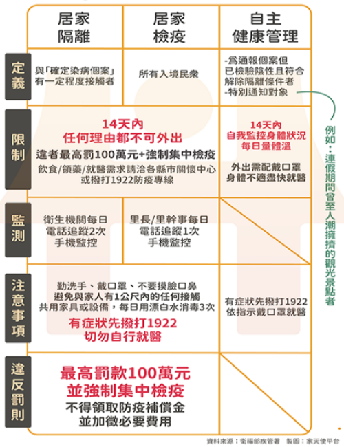

<!DOCTYPE html>
<html lang="en"><!-- InstanceBegin template="/Templates/AiCityB-01-Template02.dwt" codeOutsideHTMLIsLocked="false" -->

<head>
  <meta charset="UTF-8">
  <meta name="viewport" content="width=device-width, initial-scale=1.0">
  <meta http-equiv="X-UA-Compatible" content="ie=edge">

  <!-- Bootstrap 4 CSS 的 CDN -->
  <link rel="stylesheet" href="https://stackpath.bootstrapcdn.com/bootstrap/4.1.3/css/bootstrap.min.css"
    integrity="sha384-MCw98/SFnGE8fJT3GXwEOngsV7Zt27NXFoaoApmYm81iuXoPkFOJwJ8ERdknLPMO" crossorigin="anonymous">
  <!-- Fontawesom 的 CDN -->
  <link rel="stylesheet" href="https://use.fontawesome.com/releases/v5.5.0/css/all.css"
    integrity="sha384-B4dIYHKNBt8Bc12p+WXckhzcICo0wtJAoU8YZTY5qE0Id1GSseTk6S+L3BlXeVIU" crossorigin="anonymous">
  <!-- Google Icons CDN  -->
  <link rel="stylesheet" href="https://fonts.googleapis.com/icon?family=Material+Icons">

  <!-- My CSS file -->
  <link rel="stylesheet" href="css/mycss.css">
  <!-- InstanceBeginEditable name="doctitle" -->
  <title>樂捷市 社區資訊 - 政府通告</title>
  <meta name="description" content="AiCity Community WebSite 2019">
  <!-- InstanceEndEditable -->

<!-- InstanceBeginEditable name="head" -->
<!-- InstanceEndEditable -->
</head>

<body>
  <!-- Vue實例的掛載點 -->
  <div id='app'>

    <nav class="navbar navbar-expand-lg navbar-light bg-light">
      <a class="navbar-brand" href="AiCityB-31-Introduction.html">
		樂捷市社區網
      </a>
      <button class="navbar-toggler" type="button" data-toggle="collapse" data-target="#navbarSupportedContent"
        aria-controls="navbarSupportedContent" aria-expanded="false" aria-label="Toggle navigation">
        <span class="navbar-toggler-icon"></span>
      </button>

      <div class="collapse navbar-collapse" id="navbarSupportedContent">
        <ul class="navbar-nav mr-auto">

          <li class="nav-item dropdown">
            <a class="nav-link dropdown-toggle" href="#" id="navbarDropdown" role="button" data-toggle="dropdown"
              aria-haspopup="true" aria-expanded="false">
              <i class="fas fa-home"></i>社區管理
            </a>
            <div class="dropdown-menu" aria-labelledby="navbarDropdown">
              <a class="dropdown-item" href="index.html">社區介紹</a>
              <a class="dropdown-item" href="AiCityB-32-Calendar.html">管理行事曆</a>
              <a class="dropdown-item" href="AiCityB-33-Announcement.html">社區公告</a>
              <a class="dropdown-item" href="AiCityB-34-Meeting.html">會議紀錄及財務報表</a>
              <a class="dropdown-item" href="AiCityB-35-Regulation.html">社區規約</a>				
            </div>
          </li>
          <li class="nav-item dropdown">
            <a class="nav-link dropdown-toggle" href="#" id="navbarDropdown" role="button" data-toggle="dropdown"
              aria-haspopup="true" aria-expanded="false">
              <i class="fas fa-info"></i>社區資訊
            </a>
            <div class="dropdown-menu" aria-labelledby="navbarDropdown">
              <a class="dropdown-item" href="AiCityB-52-Transportation.html">交通資訊</a>
              <a class="dropdown-item" href="AiCityB-53-A7New.html">A7重劃區</a>
              <a class="dropdown-item" href="AiCityB-54-YellowPage.html">黃頁查詢</a>
              <a class="dropdown-item" href="AiCityB-55-County.html">里長服務</a>
              <a class="dropdown-item" href="AiCityB-56-Councillor.html">議員服務</a>
              <a class="dropdown-item" href="AiCityB-57-City.html">市府資訊</a>
              <a class="dropdown-item" href="AiCityB-58-Country.html">政府通告</a>
            </div>
          </li>
          <li class="nav-item dropdown">
            <a class="nav-link dropdown-toggle" href="#" id="navbarDropdown" role="button" data-toggle="dropdown"
              aria-haspopup="true" aria-expanded="false">
              <i class="fas fa-shopping-cart"></i>生活資訊
            </a>
            <div class="dropdown-menu" aria-labelledby="navbarDropdown">
              <a class="dropdown-item" href="AiCityB-71-Commerce.html">社區商店</a>
              <a class="dropdown-item" href="AiCityB-72-Restaurant.html">餐廳外賣</a>
              <a class="dropdown-item" href="AiCityB-73-Shopping.html">生活採購</a>
              <a class="dropdown-item" href="AiCityB-75-Health.html">健康養生</a>
              <a class="dropdown-item" href="AiCityB-76-Sport.html">運動休閒</a>
              <a class="dropdown-item" href="AiCityB-77-News.html">新聞娛樂</a>
              <a class="dropdown-item" href="AiCityB-78-Food.html">食譜教學</a>
            </div>
          </li>
        </ul>
        <form class="form-inline my-2 my-lg-0">
          <input class="form-control mr-sm-2" type="search" placeholder="Search" aria-label="Search">
          <button class="btn btn-outline-success my-2 my-sm-0" type="submit">Search</button>
        </form>
      </div>
    </nav>

    <!-- Jumbotron--><!-- InstanceBeginEditable name="JumbotronRegion" -->

      <div class="jumbotron jumbotron-fluid jumbotron-bg1 d-flex align-items-end">
        <div class="container">
		  	<div class="bg-lighter p-1" style="width:300px">
          		<h4 class="text-white" >樂捷市</h4>
          		<p class="lead text-white">政府通告資訊</p>
   			</div>
		</div>
	  </div>
		
 
    <!-- InstanceEndEditable -->
	  
    <!-- Web Page Title -->
	<!-- InstanceBeginEditable name="main_heading" -->
	<h2 id="main_heading"> </h2>
	<!-- InstanceEndEditable -->
	  
	<!-- Vue實例的掛載點 -->
    <!-- InstanceBeginEditable name="main_content" -->
    <article> 
    <div id='app' class="container-fluid mt-1">
      <div class="row">

        <div class="col-md-3">
          <h3>政府通告</h3>
          <div class="list-group" id="MenuList" role="tablist">
            <a href="#Menu-B1" class="list-group-item list-group-item-action active" data-toggle="list">振興三倍劵</a>
            <a href="#Menu-B2" class="list-group-item list-group-item-action" data-toggle="list">新冠狀病毒肺炎</a>
            <a href="#Menu-B3" class="list-group-item list-group-item-action" data-toggle="list">其他資訊</a>
          </div>

        </div>
        <div class="col-md-9">

          <div class="tab-content">

            <div class="tab-pane active" id="Menu-B1" role="tabpanel">
              <!-- Menu B1 -->
              <div class="row mb-1">
                <h3>振興三倍劵 </h3>
              </div>
              <div class="row">
                <div class="col-md-6">
                  振興三倍劵 主要資訊
                  <ul>
                    <li>經濟部 <a href="https://3000.gov.tw/Default.aspx" role="button">官方網站</a> </li>
                    <li>桃園市
                      <ul>
                        <li>加碼送 <a href="https://tyenews.com/2020/07/70896/" role="button">桃園夜市劵 200換400</a></li>
                        <li>桃園事 <a href="https://www.facebook.com/tycgnews/posts/3300299856648298"
                            role="button">來桃園怎麼花</a> </li>
                      </ul>
                    </li>
                    <li>
                      <a href="https://www.businessweekly.com.tw/focus/indep/6001991">終極懶人包</a>百家餐廳、飯店、百貨優惠一次看
                    </li>
                    <li>振興三倍券｜全台 22 縣市 <a href="https://www.managertoday.com.tw/articles/view/60023"
                        role="button">優惠方案整理</a> </li>
                    <li>振興券方案 <a href="https://www.beurlife.com/2020/06/gov-subsidy-plan-collection.html" role="button">各項振興匯總</a> </li>
                  </ul>
                </div>
                <div class="col-md-6">
                  1988 紓困振興
                  <ul>
                    <li>行政院紓困專區  <a href="https://1988.taiwan.gov.tw/" role="button">紓困-渡難關</a> </li>
                    <li>行政院紓困專區 <a href="https://1988.taiwan.gov.tw/%e6%8c%af%e8%88%88/" role="button">振興-動起來</a> </li>
                </div>
              </div>
            </div>

            <div class="tab-pane" id="Menu-B2" role="tabpanel">
              <!-- Menu B2 -->
              <div class="row mb-1">
                <h3>新冠狀病毒肺炎 </h3>
              </div>
              <div class="row">
                <div class="col-md-6">
                  主要資訊網
                  <ul>
                    <li>衛生福利部：<a href="https://www.cdc.gov.tw/" role="button">COVID-19 官網</a> </li>
                    <li>世界衛生組織：冠狀病毒 COVID-19 <a
                        href="https://www.who.int/zh/emergencies/diseases/novel-coronavirus-2019" role="button">疫情官網</a>
                    </li>
                    <li>全球疫情統計：<a
                        href="https://i.snssdk.com/ugc/hotboard_fe/hot_list/template/hot_list/forum_tab.html?activeWidget=20&city_code=652900&city_name=%E9%98%BF%E5%85%8B%E8%8B%8F"
                        role="button">即時資訊</a> </li>
                    <li>各縣市防疫單位 <a href="https://www.cdc.gov.tw/Category/Page/XRPe-3X_vQ0BmYLrvwruSw">服務專線</a> 
                      <ul>
                        <li>桃園市：居家隔離 0800-033-355</li>
                        <li>桃園市：居家檢疫 03-333-5530, 03-336-6730</li>
                      </ul>
                    </li>

                    <li>防疫旅館: <a href="https://taiwan.taiwanstay.net.tw/covhotel/">旅宿專區</a> </li>
                  </ul>
                  入境健康聲明 
                  <a href="https://www.mohw.gov.tw/cp-16-51446-1.html">衛福部規定</a>
                  <ul>
                    <li>非中港澳之所有入境航班旅客均需填報「入境健康聲明書」，並應據實填寫入境前14天內，是否前往中港澳等流行地區之旅遊史、接觸史，如有填寫不實或其他拒絕、規避、妨礙之行為者，依法最高將處15萬元罰鍰。</li>
                    <li>中港澳入境航班旅客則維持填報「入境健康聲明暨居家檢疫通知書」，且於入境14日內應配合居家檢疫措施。</li>
                    <li>入境健康聲明書線上提報
                      <ul>
                        <li> 返台前先在
                          <a href="https://hdhq.mohw.gov.tw/Default1?openExternalBrowser=1">入境檢疫系統</a> 事先線上填寫。
                        </li>
                        <li>填寫後，在提報之手機上會收到簡訊. 依據簡訊 傳送之網址及提供之護照號碼為密碼，獲得衛福部居家檢疫申報憑證. 將此畫面保存在手機上， 入關時依據此  Bar-code：FCDC x-xx-xxxxx 畫面提供檢疫查驗人員檢查。</li>
                        <li>重要提醒：必須持有中華民國的手機門號才能使用本系統服務。</li>
                      </ul>
                    </li>

                  </ul>
                  居家檢疫規定
                  <a href="https://hdhq.mohw.gov.tw/Default1?openExternalBrowser=1#:~:text=%E8%87%BA%E7%81%A3%E6%94%BF%E5%BA%9C%E8%A6%8F%E5%AE%9A,%E5%85%A5%E5%A2%83%E6%97%85%E5%AE%A2%E9%9C%80%E5%B1%85%E5%AE%B6%E6%AA%A2%E7%96%AB&text=%E6%89%80%E6%9C%89%E5%85%A5%E5%A2%83%E6%97%85%E5%AE%A2%EF%BC%8C%E8%8B%A5%E5%90%8C,%E5%88%A9%E7%B6%AD%E8%AD%B7%E8%B3%87%E6%96%99%E6%AD%A3%E7%A2%BA%E6%80%A7%E3%80%82">請重新登入確保資訊更新</a>
                  <ol>
                    <li>建議使用臺灣電信公司門號申報，並取得「居家檢疫電子申報證明」；若無臺灣手機門號，入境臺灣時，需在國際機場購買臺灣電信門號SIM卡，並且安裝完成，才能入境。</li>
                    <li>所有入境旅客，若同住者有老年人(≧65歲)、幼童(≦6歲)、慢性疾病患者(如心血管疾病、糖尿病或肺部疾病等)，或個人無單獨房間(含衛浴)者，應至防疫旅館完成居家檢疫。</li>
                    <li>自臺灣本島入境者，居家檢疫地點不得為離島。</li>
                    <li>請於航班抵臺前48小時再登入系統 ，以利維護資料正確性。</li>
                    <li>防疫旅館訂房資訊：
                      <a href="https://taiwan.taiwanstay.net.tw/covhotel/">防疫旅宿專區</a> 
                    </li>
                  </ol>
                  隔離/檢疫防疫補償
                  <ul>
                    <li>受隔離或檢疫者，經衛生主管機關認定受隔離或檢疫者未違反隔離或檢疫相關規定，亦即沒有違反隔離或檢疫通知書所載明應遵行事項，且未支領薪資或其他性質相同之補助者，可於隔離或檢疫期滿之次日起，申領防疫補償每日1,000元。</li>
                    <li>衛福部網站：
                      <a href="https://covid19.mohw.gov.tw/ch/cp-4715-52167-205.html">補助規定</a>
                    </li>
                    <li>補償申請條件
                      <ol>
                        <li>未違反隔離或檢疫相關規定</li>
                        <li>受隔離,檢疫期間，未支領薪資或其他性質相同補助</li>
                      </ol>
                    </li>
                    <li>查詢專線： 1957 每日 08:00 - 22:00</li>
                    <li>補助窗口 桃園龜山區公所 陳先生：電話 03-320-3711 ext 857, 地址：桃園市龜山區中山街26號</li>
                    <li>申請條件資格：詢問專線  1957</li>
                    <li>申請時限：可在兩年內申請，網路 <a href="https://swis.mohw.gov.tw/covidweb/">申辦網址</a> </li>
                  </ul>
                  口罩採購相關資訊:
                  <ul>
                    <li>衛福部口罩資訊: <a href="https://www.nhi.gov.tw/Content_List.aspx?n=395F52D193F3B5C7" role="button">查詢入口</a> </li>
                    <li>口罩預購時程: <a href="https://www.nhi.gov.tw/Content_List.aspx?n=19B86CC5B5267E68&topn=787128DAD5F71B1A" role="button">預購簡圖</a> </li>
                    <li>實名制 3.0 超商預購: <a href="https://www.nhi.gov.tw/Content_List.aspx?n=52C516B2DCDF2307&topn=787128DAD5F71B1A" role="button">說明影片</a> </li>
                    <li>行政院防疫: <a href="https://1988.taiwan.gov.tw/%e9%98%b2%e7%96%ab/" role="button">防疫指引</a> </li>
                  </ul>

                </div>
                <div class="col-md-6">

                  
                </div>
              </div>
            </div>

            <div class="tab-pane" id="Menu-B3" role="tabpanel">
              <!-- Menu B3 -->
              <div class="row ">
                <h3>其他資訊 </h3>
              </div>
              <div class="row">
                <div class="col-md-6">
                  <p>內政部服務熱線 - 1996</p>
                  <a href="https://line.me/R/ti/p/%40wrt8612u">
                    
                  </a>

                </div>
                <div class="col-md-6">
                  <p>政府服務熱線匯總</p>
                  <table >
                    <tr>
                      <th style="margin-right:30px">號碼</th>
                      <th >服務項目</th>
                    </tr>
                    <tr>
                      <td>1996</td>
                      <td>內政業務諮詢專線：包含身分證報失</td>
                    </tr>
                    <tr>
                      <td>110</td>
                      <td>警察局報案電話</td>
                    </tr>
                    <tr>
                      <td>119</td>
                      <td>消防局報案電話</td>
                    </tr>
                    <tr>
                      <td>165</td>
                      <td>反詐騙諮詢專線</td>
                    </tr>
                    <tr>
                      <td>168</td>
                      <td>國道路況專線</td>
                    </tr>
                    <tr>
                      <td>1991</td>
                      <td>報平安語音留言專線</td>
                    </tr>
                    <tr>
                      <td>1922</td>
                      <td>衛福部防疫專線</td>
                    </tr>
                    <tr>
                  </table>
                </div>
              </div>
            </div>

          </div>

        </div>
      </div>
    </div>	  
	</article>  
    <!-- InstanceEndEditable -->
	
	<footer id="main_footer">
		<p>
			樂捷市 Tel: 03-327-2090
		</p>

	</footer>
	
	<!-- Vue 的 CDN -->
    <script src="https://unpkg.com/vue/dist/vue.js"></script>

    <!-- Bootstrap 4 JavaScript 的 CDN -->
    <script src="https://code.jquery.com/jquery-3.3.1.slim.min.js"
      integrity="sha384-q8i/X+965DzO0rT7abK41JStQIAqVgRVzpbzo5smXKp4YfRvH+8abtTE1Pi6jizo"
      crossorigin="anonymous"></script>
    <script src="https://cdnjs.cloudflare.com/ajax/libs/popper.js/1.14.3/umd/popper.min.js"
      integrity="sha384-ZMP7rVo3mIykV+2+9J3UJ46jBk0WLaUAdn689aCwoqbBJiSnjAK/l8WvCWPIPm49"
      crossorigin="anonymous"></script>
    <script src="https://stackpath.bootstrapcdn.com/bootstrap/4.1.3/js/bootstrap.min.js"
      integrity="sha384-ChfqqxuZUCnJSK3+MXmPNIyE6ZbWh2IMqE241rYiqJxyMiZ6OW/JmZQ5stwEULTy"
      crossorigin="anonymous"></script>
    <!-- Axios 的 CDN -->
    <script src="https://unpkg.com/axios/dist/axios.min.js"></script>
	  
	<!-- InstanceBeginEditable name="JavaScriptRegion" -->
    <!-- Vue實例的程式碼 -->
    <div>
	  
	</div>
    <!-- InstanceEndEditable --></div>
 
</body>

<!-- InstanceEnd --></html>